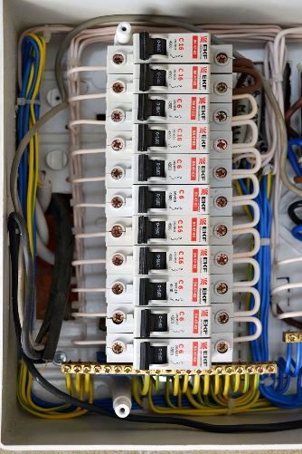
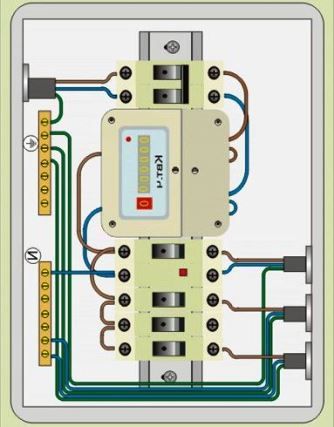

Качественный электромонтаж в Санкт-Петербурге и ленобласти, стаж 12 лет. Частный электрик, недорого и качественно.
Тел. 8 904 642 08 57 Николай.

Монтаж распределительного щитка.
Частный электрик.
При полной или частичной замене электропроводки необходимо пользоваться услугами профессионального электрика. Конечно, заменить розетку или установить выключатель самостоятельно сможет практически каждый хозяин, но если предстоят монтаж распределительного щитка, то без помощи квалифицированного опытного мастера не обойтись.
Как правило, электромонтажные работы большого объема требуется проводить в домах, построенных до 90-х годов прошлого века. Именно там проводка велась алюминиевыми кабелями малой площади сечения, распределительные щитки были рассчитаны на максимальную нагрузку в три с половиной киловатта, и отсутствовало централизованное заземление. Поэтому при наличии в квартире мощных электрических бытовых приборов лучше не ограничиваться установкой современных автоматов защиты, а проложить новые электропитающие кабели.
Сколько стоит смонтировать распределительный щиток.
Цена монтажа от 2800 руб.
Для капитальной замены электропроводки лучше всего пригласить электрика, обслуживающего конкретный дом. В отличие от стороннего, даже очень опытного мастера, он сможет раздобыть схему старой электропроводки, установить счетчик с опломбированием и составлением официального акта работ, установить и подключить новый распределительный щит квартиры к системе электроснабжения дома (опять же, с составлением всех необходимых элементов). Обычный мастер сможет, конечно, выполнить все эти работы, но вот для оформления документации хозяевам придется побегать самим.
До начала работ электрику необходимо ознакомиться с бытовыми электроприборами и узнать места их локализации. На основании этих данных он рассчитает необходимое сечение проводов, выберет тип их изоляции, подберет необходимые автоматы защиты, наметит места расположения розеток. Распределительный щиток устанавливается, как правило, стандартный, рассчитанный на мощность в семь киловатт.
Схема монтажа распределительного щитка.
После составления схемы мастер приобретет все необходимые комплектующие и материалы и приступит к работе.
В обязанности добросовестного электрика входят:
- обесточивание (в некоторых случаях – удаление) старой электропроводки;
- установка новых автоматов защиты, устройств защитного отключения, распределительного щитка, электросчетчика;
- прокладка электропроводки в соответствии с составленной схемой; способы прокладки варьируются в зависимости от пожелания хозяев;
- установка розеток и выключателей;
- соединение проводки в единый контур;
- защита от поражения током – «зануление» розеток, предназначенных для включения мощных электрических приборов;
- составление чертежа проводки (если она скрыта) с точным указанием места прохождения кабелей и типа проводов;
- монтаж распределительного щитка;
- подключение распределительного щитка к центральной системе электроснабжения, проверка амплитуды и фазировки напряжения непосредственно на выходе каждой розетки;
- проверка функционирования новой проводки при максимальной нагрузке.
По желанию хозяев мастер может дать профессиональные советы по устройству освещения различных помещений и установить осветительные приборы, в том числе и нестандартные (подсветка «парящего» подвесного потолка, монтаж системы освещения оригинального натяжного потолка, монтаж светодиодной ленты).
Помимо этого, в компетенцию электрика входит установка или замена вентилятора в системе принудительной вентиляции, электрического полотенцесушителя, радиаторов электрического отопления (например, на балконе или лоджии).
 Поменять проводку в квартире.
Поменять проводку в квартире. Сколько будут стоить материалы.
Карта сайта.
Замена электропроводки в панельном доме.
Расценки на электропроводку квартир.
Замена проводки в хрущевке.
Электромонтаж в частном доме.
Электрика в загородном доме.
Сколько стоит замена электропроводки в двухкомнатной квартире?.
Сколько стоит проложить проводку в 3 ком квартире?
Сколько стоит проложить проводку в четырех комнатной квартире?
Сколько стоит сделать внутреннюю проводку?.
Стоимость штробление стен.
Установка люстр и светильников.
Замена электропроводки в панельном доме.
Электромонтаж проводов в бане.
Электрика в загородном доме